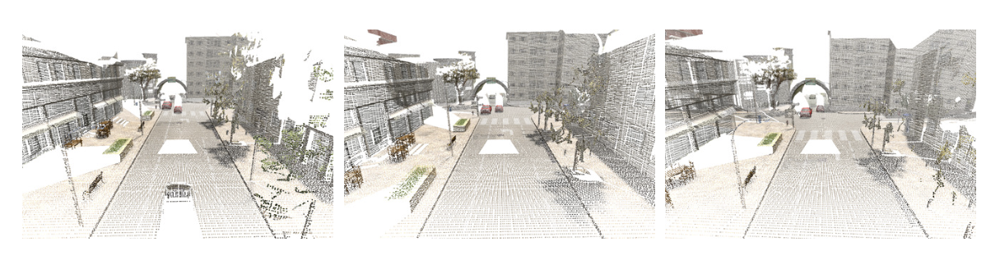
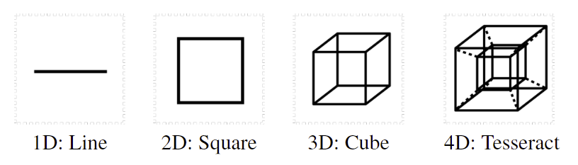
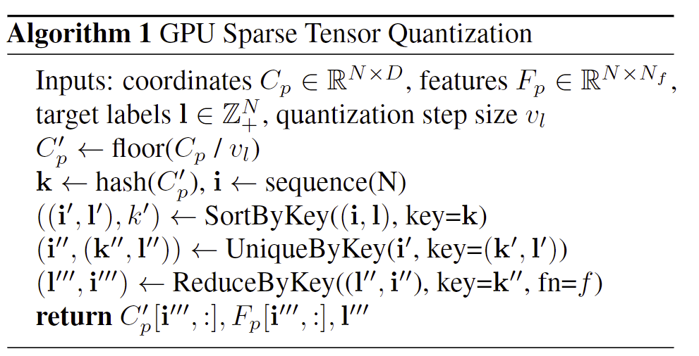

论文4D Spatio-Temporal ConvNets—--nkowski Convolutional Neural Networks

Christopher Choy et al. “4D Spatio-Temporal ConvNets: Minkowski Convolutional Neural Networks” Computer Vision and Pattern Recognition (2019).
因为需要用到稀疏张量的运算库所以将对论文中关于稀疏张量和稀疏卷积的内容做总结，其他部分只是用了机翻而已。
摘要：
在许多机器人和VR/AR应用中，3D视频是容易获得的输入源(深度图像序列或LIDAR扫描)。然而，在许多情况下，3D视频是通过2D或3D感知算法逐帧处理的。在这项工作中，我们提出了时空感知的四维卷积神经网络，它可以利用高维卷积直接处理这类3D视频。为此，我们采用稀疏张量[8，9]，并提出了包含所有离散卷积的广义稀疏二次卷积。为了实现广义稀疏卷积，我们创建了一个开源的稀疏张量自微分库1，它为高维卷积神经网络提供了广泛的功能。我们利用该库构建了4D时空卷积神经网络，并在各种3D语义分割基准上对其进行了验证，提出了用于3D视频感知的4D数据集。为了克服4D空间中的挑战，我们提出了混合核(广义稀疏卷积的特例)和三边平稳条件随机场，以增强7D时空色度空间的时空一致性。实验表明，仅采用广义3D稀疏卷积的卷积神经网络的性能比2D或2D-3D混合方法有较大幅度的提高2。此外，在3D视频上，4D时空卷积神经网络对噪声具有较强的鲁棒性，性能优于3D卷积神经网络。
2. 在提交时，我们在Scan-Net[5]上取得了最好的性能，67.9%的mIoU ↩
1. Introduction
在这项工作中，我们对3D视频感知感兴趣。3D视频是3D扫描的时间序列，例如来自深度相机的视频、LIDAR扫描序列或同一对象或身体部分的多次MRI扫描(图1)。

Figure 1: An example of 3D video: 3D scenes at different time steps. Best viewed on display.
随着激光雷达扫描仪和深度相机变得更加实惠和广泛用于机器人应用，3D-VIDO成为机器人系统或AR/VR应用的现成输入源。

图2：超立方体在不同维度的2D投影
然而，在使用3D视频进行高级感知任务方面存在许多技术挑战。首先，3D数据需要异构的表示和处理，这要么会疏远用户，要么会使其难以集成到更大的系统中。第二，三维卷积神经网络的性能比二维卷积神经网络差或相当。第三，用于快速大规模3D数据的开源存储库数量有限是另一个因素。
为了解决高维感知中的大部分(如果不是全部)挑战，我们采用了稀疏张量[8，9]来解决我们的问题，提出了稀疏张量的广义稀疏卷积，并发布了一个开源的具有全面标准神经网络函数的稀疏张量自动差异库。
我们采用稀疏表示有几个原因。目前，3D感知有多种并行工作：密集3D卷积[5]、点网变量[23，24]、连续卷积[12，16]、曲面卷积[21，30]和八叉树卷积[25]。在这些表示中，我们选择了一个稀疏张量，因为它对于高维空间具有表现性和泛化能力。此外，它还允许在传统神经网络库中进行同质数据表示，因为它们中的大多数都支持稀疏张量。
其次，稀疏卷积与标准卷积(SEC.3)其在2D感知和3D重建[4]、特征学习[34]和语义分割[5]方面被证明是成功的。由于广义稀疏卷积是标准2D卷积的直接高维扩展，我们可以重新利用所有的体系结构创新，例如剩余连接、批归一化和许多其他，而对于高维问题几乎不需要修改。
第三，稀疏卷积效率高、速度快。它只计算预定义坐标的输出，并将其保存到紧凑稀疏张量(第三章)。它既节省了内存，又节省了计算，特别是对于3D扫描或高维数据，因为那里的大部分空间都是空的。
利用提出的库，我们创建了第一个大规模的3D/4D网络3，并以物理学中的时空连续体Minkowski空间命名为Minkowski网络。
然而，即使有了有效的表示，由于维数灾难，仅将3D卷积缩放到高维空间也会导致显著的计算开销和内存消耗。核大小为5的2D卷积需要$5^2$=25权重，在3D中权重指数增加到$5^3=125$，在4D中权重增加到625(图2)。然而，这种指数级的增长并不一定会带来更好的性能，还会显著降低网络速度。为了克服这一挑战，我们提出了非(超)立方形状的自定义内核。
最后，4D时空预测在整个空间和时间上不一定是一致的。为了加强一致性，我们提出了在7D三角形空间(时空-时间-颜色)中定义的条件随机场，并给出了一个静态一致性函数。我们使用变分推理将条件随机场转换成可微分的复现层，它可以作为一个7D的Minkowskinwork来实现，并且可以端到端地训练4D和7D网络。
实验上，我们使用各种3D基准，涵盖室内[5，2]和室外[28，26]。首先，我们展示了没有2D卷积神经网络的纯3D方法可以比2D或混合深度学习算法有更大的优势。4此外，我们从Synthia[28]和VarCity[26]创建了4D数据集，并报告了时间分量的消融研究。
2. 相关工作
4D时空感知基本上需要3D感知，因为沿时间维度的4D切片是3D扫描。但是，由于目前还没有使用神经网络进行4d感知的先期工作，所以我们将主要讨论3d感知，特别是使用神经网络进行3d分割。
我们将以前的三维工作分为(A)三维卷积神经网络或(B)无三维卷积的神经网络。最后，我们将介绍早期的4D感知方法。虽然2D视频是时空数据，但我们不会在本文中讨论它们，因为3D感知需要完全不同的数据处理、实现和架构。
3D卷积神经网络 三维卷积神经网络的第一个分支使用矩形网格和密集表示[31，5]，其中空白空间表示为0或符号距离函数。这种直截了当的表示是直观的，并且得到了所有主要公共神经网络库的支持。然而，由于3D扫描中的大部分空间是空的，它存在内存消耗高和计算速度慢的问题。为了解决这个问题，OctNet[25]建议使用八叉树结构来表示3D空间并在其上卷积。
第二个分支是稀疏三维卷积神经网络[29，9]。用于高维的量子化方法有两种：矩形网格和置换面体点阵[1]。[29]使用置换面体网格，而[9]使用矩形网格进行3D分类和语义分割。
最后一个分支是三维伪连续卷积神经网络[12，16]。与前人的工作不同，他们在连续空间中使用连续核来定义卷积。然而，在一个连续的空间中寻找邻居是昂贵的，因为它需要KD-树搜索而不是哈希表，并且容易受到点云分布不均匀的影响。
没有3D卷积的神经网络。 最近，我们看到用于3D感知的无3D卷积的神经网络有了巨大的增长。由于三维扫描是由薄的可见表面组成的，[21，30]提出在表面上使用二维卷积进行语义分割。
另一个方向是基于PointNet的方法[23，24]，PointNet使用一组输入坐标作为多层感知器的特征。然而，这种方法处理的点数量有限，因此，用于从输入中裁剪出部分的滑动窗口被用于较大的空间，使得接收字段的大小相当有限。[15]试图用多点网上的递归网络来解决这些缺点，并在[16]中提出了一种适用于点网低层的3D连续卷积的变体，并获得了显著的性能提升。
4D perception. 第一个4D感知算法[19]提出了一个用于4D心脏图像分析的动态变形气球模型。后来，[17]使用4D马尔可夫随机场进行心脏分割。最近，[35]将用于空间数据的A3D-UNET和用于时间数据的一维自动编码器相结合，并将该模型应用于脑fMRI图像的自动编码。
在本文中，我们提出了第一个用于包含4D时空数据或3D视频的高维空间的卷积神经网络。与其他将时间数据与递归神经网络或浅模型相结合的方法相比，我们的网络在整个网络中一致地使用齐次表示、卷积和其他神经网络。具体地说，卷积在许多2D/3D空间感知以及时间或序列建模中被证明是有效的[3]。
3. 稀疏张量和卷积
我们将一组4D坐标表示为$\mathcal C=\{(x_i,y_i,z_i,t_i)\}_i$或矩阵$C$和相关的特征$\mathcal F=\{\mathbf f_i\}_i$或矩阵$F$。
然后一个稀疏张量可以被写为
其中$b_i$是批次中的索引，也就是批次中第$b_i$个数据，$\mathbf f_i$是向量。
如果将点云作为数据，则这就是指当前批次下的第$b_i$个点云
3.1 广义稀疏卷积
设$x_{\mathbf u}^{in} \in \mathbb R^{ N^{in} }$是一个D维空间中坐标为$u \in \mathbb R^D$(一个D维向量坐标)的一个 $N^{in}$维的输入特征向量，
卷积核的权重为$\mathbf W \in \mathbb R^{K^D \times N^{\rm out} \times N^{\rm in}}$
将权重分解为空间权重，用大小为$N^{out} \times N^{in}$的$K^D$矩阵，
矩阵的每个元素为$K^D$，即$W_{\bf i}\ \mathrm{for} \ | \{ \mathbf i\}_{\mathbf i} | = K^D$
通常密集卷积在D维中是
其中$\mathcal V^D(K)$是在D维超立方体以原点为中心的偏移量的列表。例如$\mathcal V^1(3) = \{-1, 0,1\}$
$\mathcal V^1$是1维的偏移量列表也就是一个维度上的所以刚好是三个标量，也就是一维向量。如果是2维就是3x3的每个都是类似$(1,1)$的2维向量了
广义稀疏卷积如下公式（3）是公式（2）的推广
其中$\mathcal N^D$是定义内核形状的一组偏移量
$\mathcal N^D(\mathbf u,\mathcal C^{in}) = \{ \mathbf i | \mathbf{u+i} \in \mathcal C^{in}, \mathbf i \in \mathcal N^D \}$作为存在于$\mathcal C^{\rm in}$中的距当前中心$\bf u$的偏移量集合。
$\mathcal C^{\rm in}$和$\mathcal C^{\rm out}$是预定义的输入和输出稀疏张量的坐标
4 Minkowski Engine
4.1 稀疏张量的量化
算法1 GPU 稀疏张量量化
输入：坐标$C_p\in \mathbb R^{N\times D}$，特征$F_p\in \mathbb R^{N\times N_f}$，target labels $\mathbf l \in \mathbb Z^N_+$，量化的步进大小(quantization step size) $vl$

- floor()函数就是地板函数返回$\leq C_p/v_l$的最大整数
- 序列化N生成索引index $\bf i$，通过坐标$C’_p$生成hashkey $\bf k$
- 根据$\bf k$对$(\bf i,l)$进行排序得到$\bf ((i’,l’),k’)$
- 删去具有相同坐标和标签的数据得到$\bf(i’’,(k’’,l’’))$
- 通过reduction function处理对同一坐标具有多个标签的情况
- 返回最后的结果
卷积的部分实在是看不懂……以后有时间再说吧。